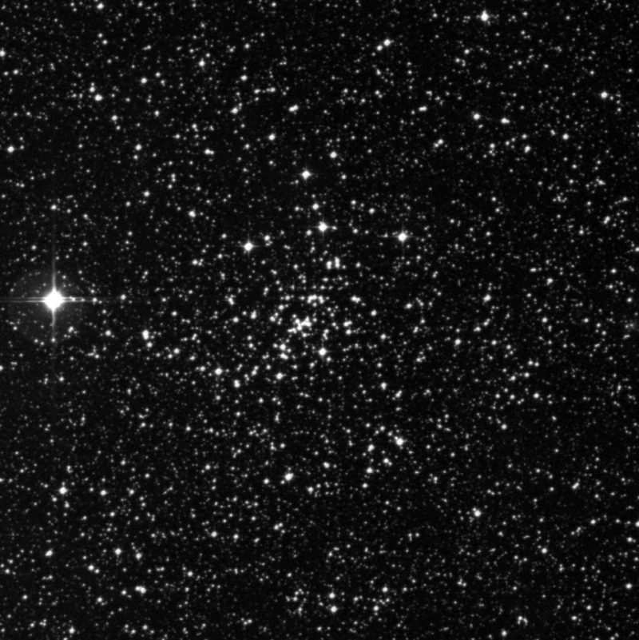
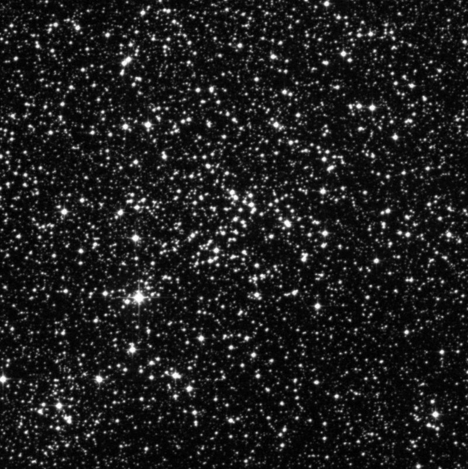
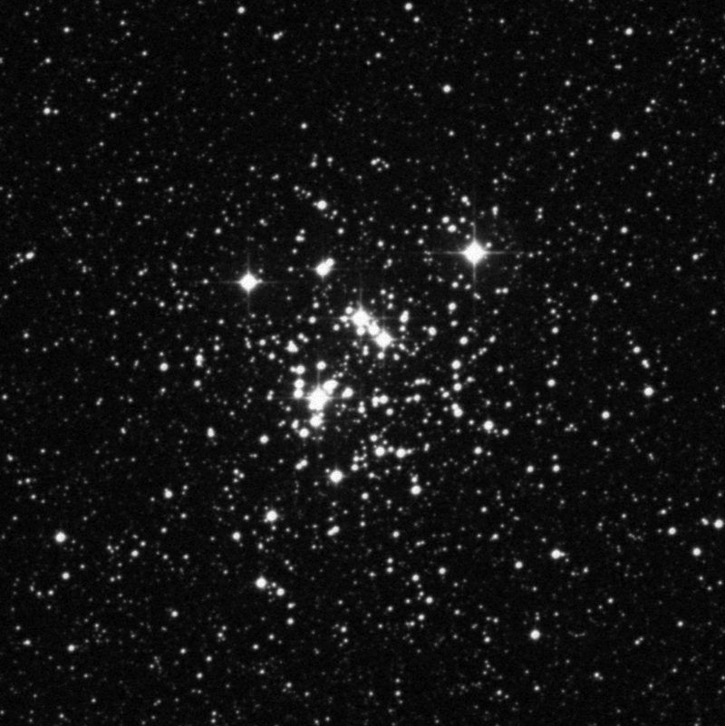

Deep Sky Notes
☰
Articles
Observing Notes ▾
Master Table
Browse by Constellation
Observing Lists
Published
Links
About
Catalogue
›
Constellations
›
Crux
Crux
3 objects in the catalogue

NGC 4337 (OC)
Open Cluster
Mag 8.9 | Size 3.5′

NGC 4349 (OC)
Open Cluster
Mag 7.4 | Size 15.0′

NGC 4755 (OC)
Open Cluster
Mag 4.2 | Size 10.0′